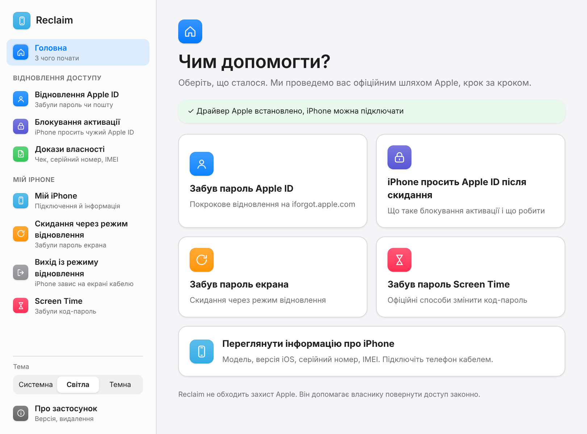
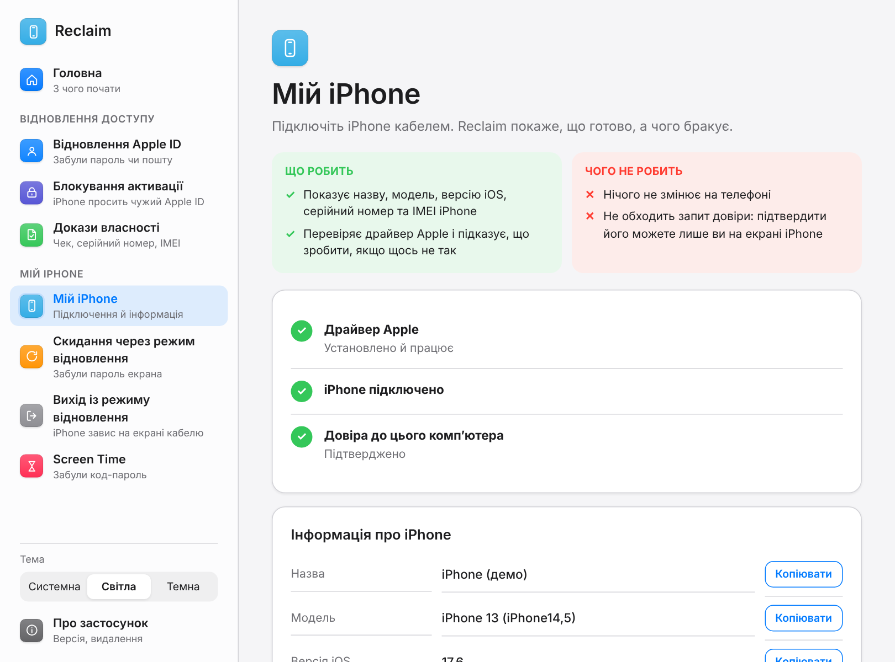

Reclaim
Чесний помічник для власника iPhone, який забув пароль або Apple ID. Крок за кроком веде офіційними шляхами Apple.

Підключили — і видно все.
Reclaim показує, що готово, а чого бракує, і лише пропонує офіційні кроки. Нічого не завантажується приховано.
iPhone одразу в розділі «Мій iPhone».
Утиліти libimobiledevice вбудовані, окремо ставити їх не треба. Застосунок перевіряє драйвер Apple і, якщо його немає, пропонує відкрити офіційне встановлення з Microsoft Store.

Що робить застосунок.
На кожному екрані написано, що режим робить і чого не робить.
Відновлення Apple ID
Веде на офіційну сторінку iforgot.apple.com, де відновлюють доступ до облікового запису.
Блокування активації
Пояснює, що це за захист і як його знімає власник за допомогою Apple ID та пароля.
Докази власності
Чек-лист того, що потрібно підтримці Apple, плюс серійний номер та IMEI, які можна зберегти як PDF-пакет.
Інформація про iPhone
Назва, модель, версія iOS, серійний номер та IMEI підключеного iPhone. Утиліти вже вбудовані в застосунок.
Скидання через режим відновлення
Покрокові підказки для різних моделей. Саме скидання виконує програма Apple, і дані на пристрої видаляються.
Вихід із режиму відновлення
Кроки для різних моделей, якщо iPhone завис на екрані з кабелем і комп’ютером.
Screen Time
Офіційні способи змінити код-пароль Screen Time. Код не підбирається і не «ламається».
Світла й темна тема
Системна, світла або темна; вибір запам’ятовується.
Видалення в один клік
У «Про застосунок» видно версію, а кнопка запускає стандартне видалення Windows.
Подивіться зблизька.
Світла й темна тема, бічне меню з підрозділами, у стилі Apple.
Чесні межі.
Reclaim захищає власників, а не допомагає обійти захист чужих пристроїв.
Не обходить блокування активації
Це функція захисту від викрадення. Зняти її може лише власник облікового запису.
Не знімає Apple ID без пароля власника
Доступ відновлюється тільки офіційно, через Apple.
Встановлення за хвилину.
Windows і драйвер Apple. Решту застосунок перевірить сам.
Завантажте
Натисніть «Завантажити»: прийде файл Reclaim-setup.exe.
Запустіть
Інсталятор поставить застосунок, а у «Встановлених програмах» Windows з’явиться Reclaim.
Підключіть iPhone
Потрібен Apple Devices із Microsoft Store або iTunes. З’єднайте кабелем і натисніть «Довіряти» на екрані iPhone.
Питання й відповіді.
Чи може Reclaim розблокувати чужий iPhone?
Ні. Застосунок не обходить блокування активації і не знімає Apple ID без пароля власника.
Навіщо потрібен драйвер Apple?
Без служби Apple Mobile Device, яка входить до Apple Devices та iTunes, Windows не бачить iPhone, і розділ «Мій iPhone» буде порожнім.
Чи завантажує Reclaim щось сам?
Ні. Якщо драйвера немає, застосунок лише пропонує відкрити офіційне встановлення з Microsoft Store.
Що станеться з даними під час скидання?
Скидання через режим відновлення видаляє дані на iPhone. Його виконує програма Apple, а не Reclaim.
Скільки триває відновлення Apple ID?
Це визначає Apple. Іноді відновлення облікового запису займає кілька днів, тому докази власності краще підготувати заздалегідь.
Куди потрапляють мої дані?
Reclaim працює локально на вашому комп’ютері й відкриває лише офіційні сайти Apple та Microsoft Store.
Це відкритий код?
Так, увесь код лежить у репозиторії на GitHub, а інсталятор збирає GitHub Actions із цього коду.
Як видалити застосунок?
Через Параметри → Програми → Reclaim → Видалити або кнопкою в розділі «Про застосунок».
Поверніть доступ до свого iPhone.
Версія 0.2.0 для Windows.